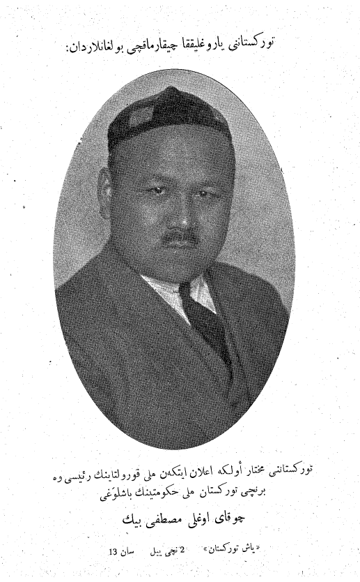

Пресса туркестанской эмиграции: журналы «Янги Туркистан» и «Яш Туркистан» (1927–1939)
Два журнала, выходившие вдали от родины в советскую эпоху, — «Янги Туркистан» в Стамбуле и «Яш Туркистан», печатавшийся в Берлине, — стали голосом туркестанской интеллигенции в эмиграции. Вот их история с точными датами и фактами.

В 1920-е годы туркестанские интеллигенты, покинувшие большевистскую власть, образовали в Европе политическую эмигрантскую общину с центрами в Стамбуле, Берлине, Париже и Варшаве. Первая волна бежала в основном через Афганистан и Иран; часть составляли бывшие военнопленные и студенты, оставшиеся в Германии. В этой среде возникла пресса, освещавшая судьбу Туркестана из-за рубежа (Источник: academia.edu — The Early Turkestani Émigré Struggle and Turkestanism; einfolib.uz — Collecting exile).
«Янги Туркистан» (Стамбул, 1927–1931)
Первый номер журнала «Янги Туркистан» (Yeni Türkistan) вышел в Стамбуле в июне 1927 года. Им руководил башкирский историк и политик Ахмет Заки Валиди Тоган вместе с Абдулкадиром Инаном. Журнал выходил около четырёх лет и был закрыт турецким правительством в 1931 году — в период улучшения советско-турецких отношений (Источник: Wikipedia — Zeki Velidi Togan; TESAM Akademi).
«Яш Туркистан» (Берлин, 1929–1939)
Первый номер «Яш Туркистан» (Yaş Türkistan) вышел в декабре 1929 года. Журнал редактировался в Ножан-сюр-Марн под Парижем и печатался в Берлине — поэтому называть его просто «берлинским» не вполне точно. Редактором и ведущей фигурой был Мустафа Чокай. За десять лет вышло около 117 номеров; последний появился в сентябре 1939 года и завершился с началом Второй мировой войны. Печатался он на чагатайском (туркестанском) тюркском арабским письмом, чтобы читатели в Германии, Иране, Индии и Афганистане, не знавшие новой латиницы, могли его читать (Источник: Atatürk University — Yaş Türkistan Dergisi (1929–1939); uz.wikipedia; einfolib.uz).

Мустафа Чокай (1890–1941)
Мустафа Чокай родился в 1890 году в районе Сырдарьи Русского Туркестана (на территории нынешнего южного Казахстана). С декабря 1917 по февраль 1918 года он возглавлял недолго просуществовавшую Туркестанскую (Кокандскую) автономию; позже стал признанным лидером туркестанской политической эмиграции. Чокай прибыл в Париж в 1921 году, а с 1923 года жил в Ножан-сюр-Марн, где провёл около восемнадцати лет (Источник: Wikipedia — Mustafa Shokay; TDV İslâm Ansiklopedisi).
Он был антисоветским публицистом, автором таких работ, как «Turkestan under Soviet Rule» (1935), и воспоминаний о событиях 1917 года. 22 июня 1941 года — в день нападения Германии на СССР — он был арестован нацистами и доставлен в Берлин; он отказался возглавить спонсируемый немцами Туркестанский легион и умер в Берлине 27 декабря 1941 года. Официальной причиной смерти назван тиф (заражение крови); в воспоминаниях его жены Марии Чокай высказывалась и версия об отравлении — утверждение, опирающееся лишь на её рассказ (Источник: Wikipedia — Mustafa Shokay).
Варшава, движение «Прометей» и цель прессы
Часть эмигрантской прессы была связана с возглавляемой Польшей сетью «Прометей» (Prometheism) — проектом, начатым лидером Польши Юзефом Пилсудским для поддержки движений за независимость нерусских народов Российской империи/СССР, со штаб-квартирой в Варшаве с 1928 года, где Туркестан значился среди народов. Некоторые источники (французская Википедия и проект einfolib.uz) указывают, что «Яш Туркистан» финансировался Польшей; другие источники этого не упоминают. В целом цель эмигрантской прессы описывается как информирование диаспоры, документирование советской политики в Туркестане (коллективизация, пятилетки) и сохранение национальной идеи (Источник: Wikipedia — Prometheism; einfolib.uz; Atatürk University).
Наследие
Эти журналы — письменная летопись истории Туркестана, сохранённая вне советской цензуры, а в своё время они поддерживали национальное самосознание диаспоры; после независимости их заново изучали в Узбекистане и Казахстане. Некоторые детали — в том числе точное место рождения Чокая, тираж журналов и общее число номеров «Янги Туркистан» — различаются в источниках или надёжно не подтверждены, поэтому статья приводит только факты, подтверждённые несколькими источниками (Источник: Wikipedia — Mustafa Shokay; Atatürk University — Yaş Türkistan Dergisi).